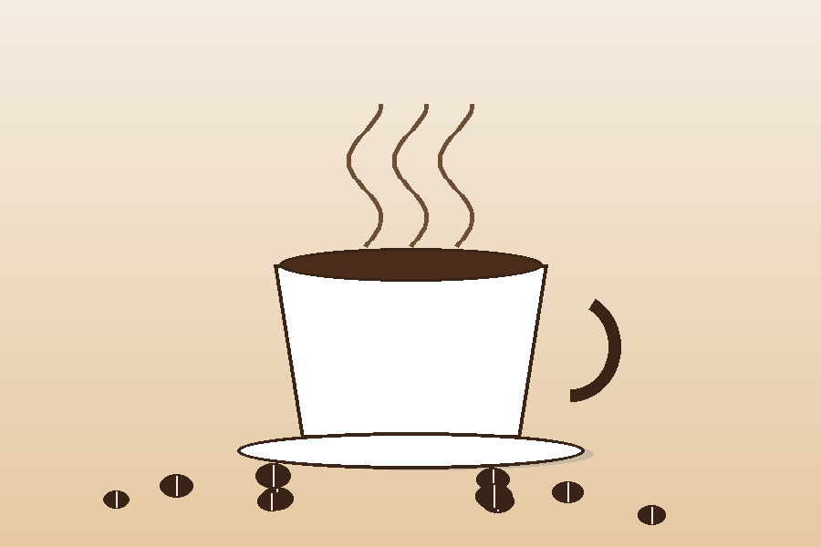

¿Por qué este sitio?
Empecé a moler mi propio café hace un año, casi por accidente, y desde entonces no he podido parar. Esta página es mi cuaderno digital: aquí anoto las proporciones que me funcionan, los errores que ya no quiero repetir y los granos que vale la pena volver a comprar.
Lo que vas a encontrar aquí
Guías cortas de método V60 y prensa francesa, comparaciones de molienda y, poco a poco, reseñas de tostadores locales. Nada de vocabulario innecesario: solo lo que realmente cambia el sabor en la taza.